Per questa nostra giornata fuori porta abbiamo scelto Perugia, con un programma che unisse la visita alla Casa del Cioccolato Perugina, un pranzo con le specialità umbre e un giro nel centro storico.
Il tempo non è stato dei migliori, così abbiamo dedicato meno spazio alla passeggiata all’aperto e privilegiato le visite all’interno. Tra la Cattedrale, il Palazzo dei Priori e la Galleria Nazionale dell’Umbria, abbiamo comunque avuto tante cose da scoprire.
Alla scoperta della Casa del Cioccolato Perugina
Siamo partiti alle 8:30 da San Giovanni Valdarno e abbiamo raggiunto la Casa del Cioccolato Perugina, in Viale San Sisto 207/C, per la visita delle 10:30.
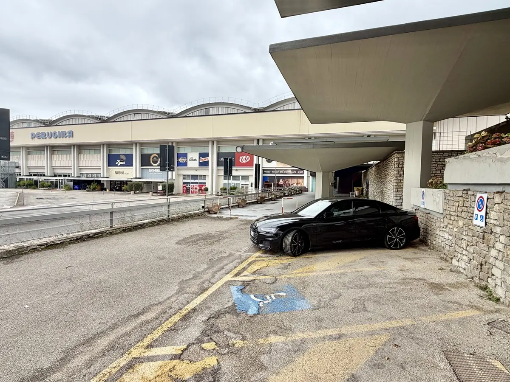
Il percorso ci ha accompagnati nella storia dell’azienda attraverso il museo e un filmato, prima della degustazione e della visita alla fabbrica.
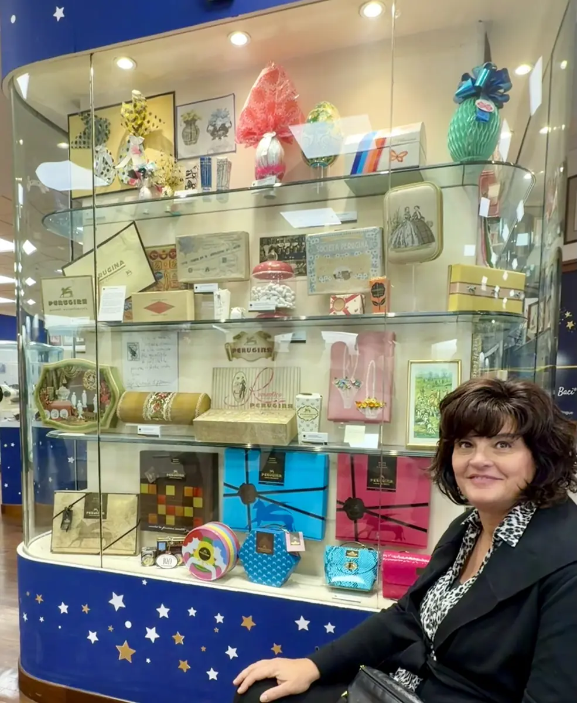
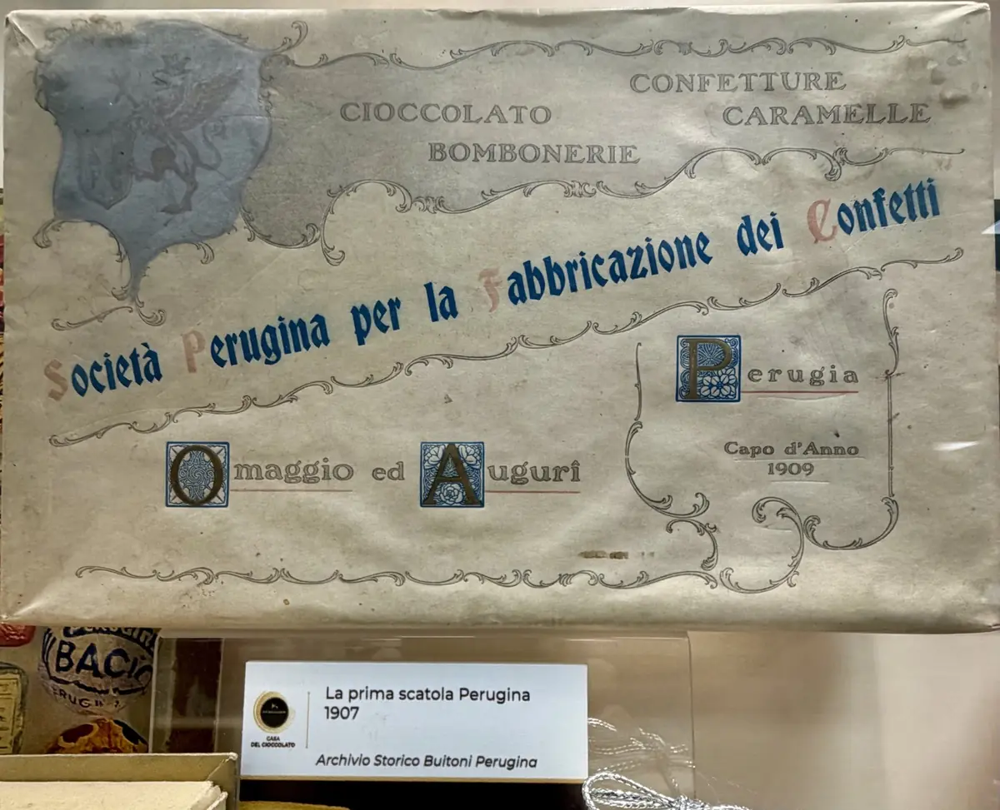
Tra le storie raccontate, mi ha colpito quella di Luisa Spagnoli e della nascita del Bacio. Nel 1922 ebbe l’intuizione di utilizzare la granella di nocciole rimasta dalle altre lavorazioni per creare un nuovo cioccolatino, con una nocciola intera sulla sommità e una copertura di cioccolato fondente.
Per la forma, che ricordava un pugno chiuso, inizialmente venne chiamato “Cazzotto”. Fu Giovanni Buitoni a suggerire un nome più dolce: “Bacio”.
Tra Luisa e Giovanni nacque anche una storia d’amore, che accompagnò il loro legame professionale.
Ed è proprio la Luisa Spagnoli della moda: dalle sue creazioni in lana d’angora ebbe origine l’attività da cui sarebbe nato il celebre marchio di abbigliamento. Una donna intraprendente e avanti per quegli anni, attenta anche alle lavoratrici, per i cui figli fece realizzare un asilo nello stabilimento.
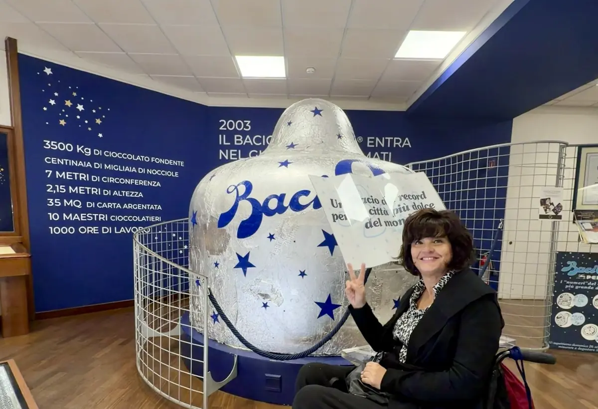
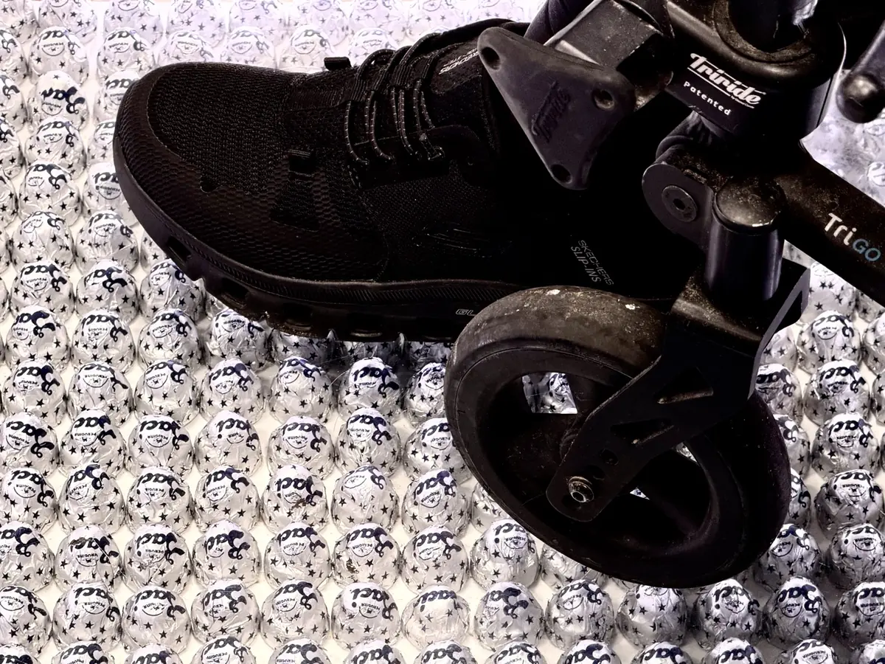
La degustazione e la visita alla fabbrica
La visita è proseguita con la degustazione del cioccolato e con l’ingresso nello stabilimento.
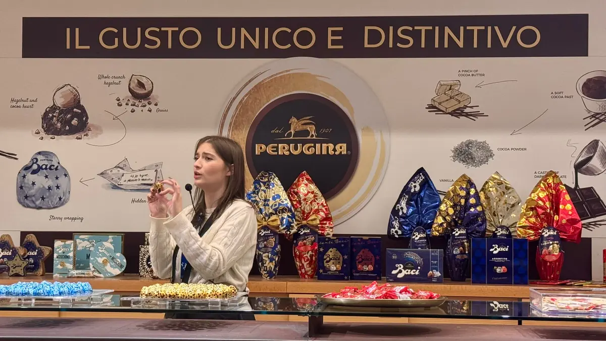
Con la carrozzina ho raggiunto un ballatoio affacciato su una parte delle linee produttive. Anche se il percorso della fabbrica non è completamente accessibile, da qui sono riuscita a vedere alcune fasi della lavorazione e sono rimasta soddisfatta della visita.
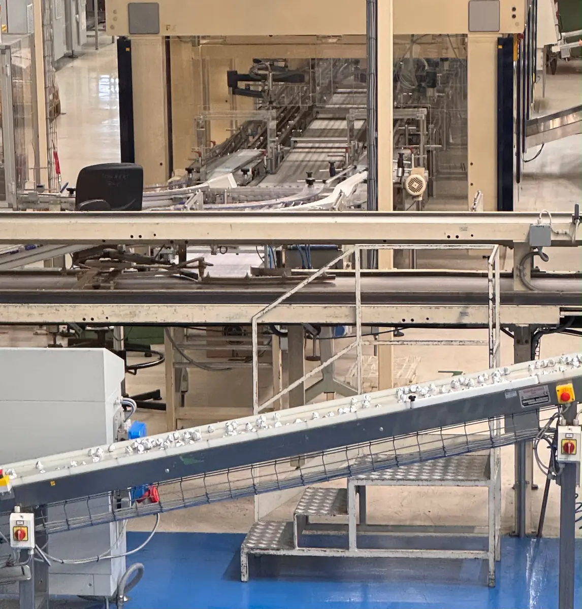
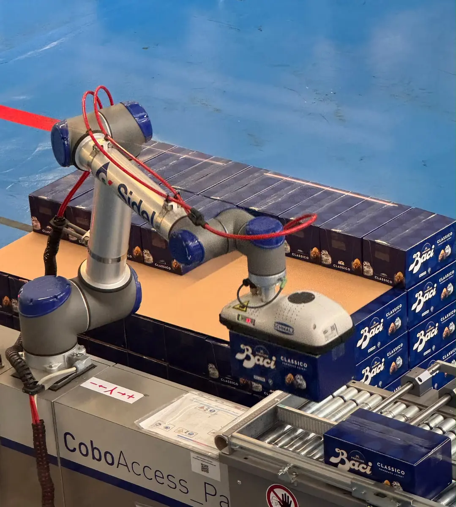
Prima di andare via ci siamo fermati al negozio per qualche acquisto: un po’ di cioccolato da portare a casa non poteva mancare!
Accessibilità · La Casa del Cioccolato Perugina
Abbiamo trovato posti riservati alle persone con disabilità vicinissimi all’ingresso. Ho utilizzato personalmente anche il bagno accessibile.
La visita è possibile fino al ballatoio affacciato su una parte delle linee dello stabilimento.
Da sapere prima di andare
Il percorso sopraelevato sulle linee produttive non è accessibile alle persone con difficoltà motorie o che utilizzano ausili, come carrozzine o stampelle.
La presenza di persone che utilizzano ausili va comunicata al momento della prenotazione, per consentire un’assistenza adeguata durante la visita.
Il parcheggio e l’arrivo in centro
Intorno alle 12:15 ci siamo spostati verso il centro storico e abbiamo lasciato l’auto al parcheggio SABA Mercato Coperto, in Via Angusta.
Da qui abbiamo utilizzato gli ascensori per raggiungere Piazza Matteotti e iniziare il nostro giro.
Accessibilità · Dal parcheggio al centro
Il parcheggio è a pagamento e dispone di posti riservati alle persone con disabilità. Gli ascensori permettono di raggiungere il centro senza affrontare le scale; una volta usciti abbiamo incontrato alcune pendenze e un piccolo dislivello.
Ho visto il simbolo dell’accessibilità vicino ai servizi igienici, ma non li ho utilizzati e non ne ho verificato gli spazi interni.
Il pranzo alla Trattoria Oberdan
Avevamo prenotato alla Trattoria Oberdan, in Via Guglielmo Oberdan 35/37.
Abbiamo assaggiato gli strangozzi alla Norcina originaria con tartufo, preparati con crema di ricotta, salsiccia e funghi porcini, e la trippa alla Perugina, accompagnata dalla tradizionale torta al testo.
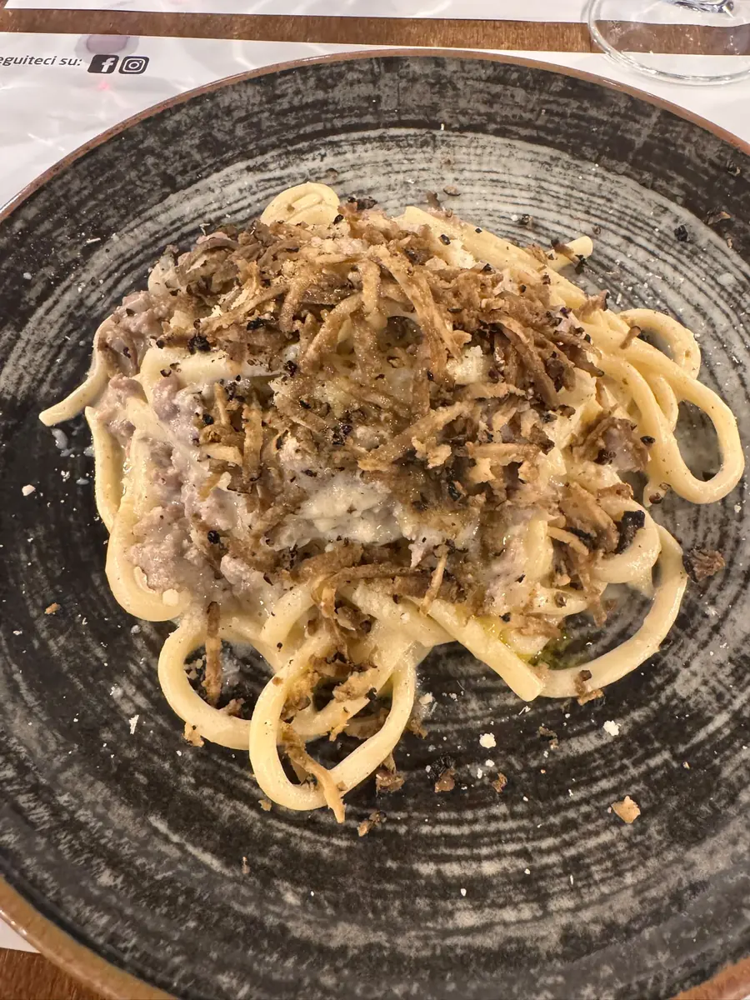
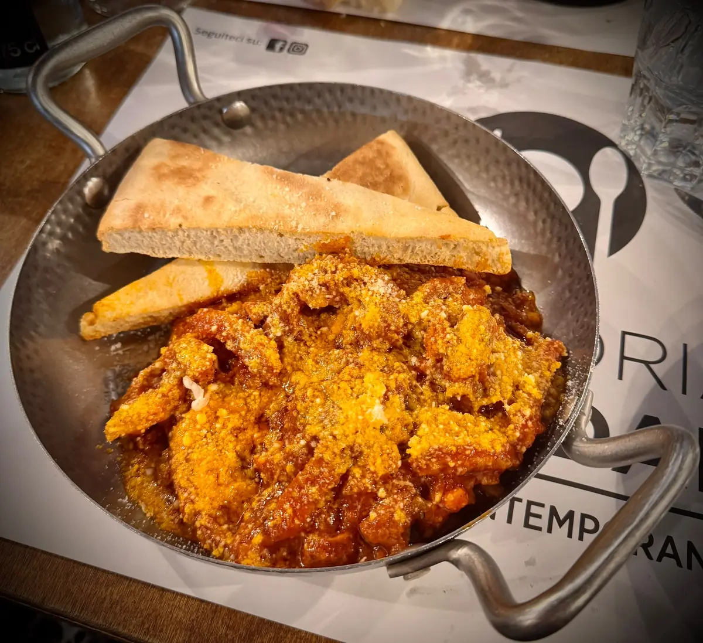
Il pranzo ci è piaciuto tantissimo. Abbiamo fatto anche i complimenti al cuoco: dopo la scarpetta, i nostri piatti erano così puliti che sembravano già lavati!
Da sapere prima di andare
All’ingresso c’è un gradino. Abbiamo sganciato il Triride e sono entrata con la carrozzina, aiutata dal mio accompagnatore.
Accessibilità · La Trattoria Oberdan
Nel ristorante è presente un bagno accessibile, che ho utilizzato personalmente.
Corso Vannucci e Piazza IV Novembre
Dopo pranzo abbiamo percorso Corso Vannucci, la via principale del centro storico, fino a raggiungere Piazza IV Novembre.
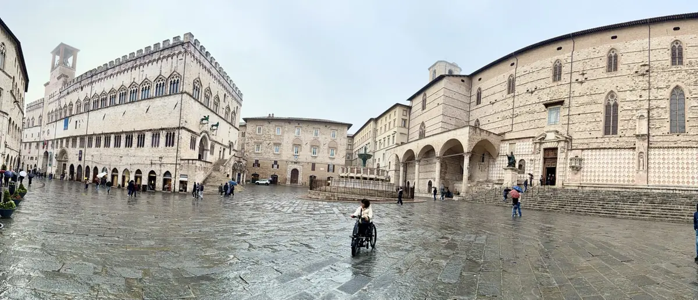
Qui si trovano alcuni dei luoghi più rappresentativi di Perugia: la Fontana Maggiore, il Palazzo dei Priori e la Cattedrale di San Lorenzo.
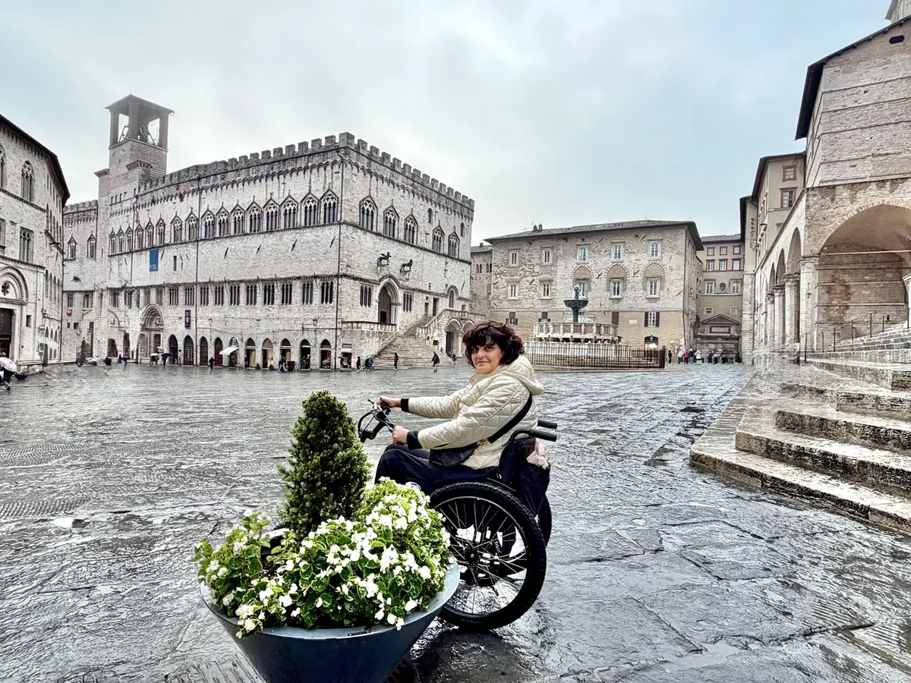
La fontana occupa il centro della piazza, mentre gli edifici che la circondano raccontano la storia religiosa e civile della città. Ci siamo fermati a guardarci intorno, prima di iniziare le visite del pomeriggio.
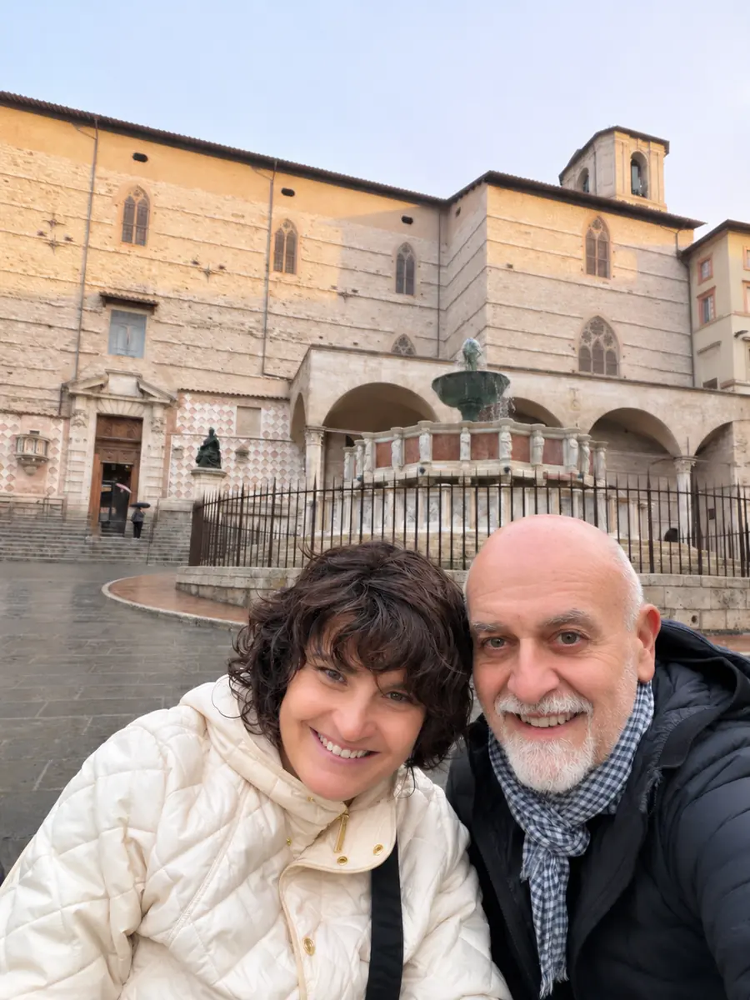
La Cattedrale di San Lorenzo
Abbiamo visitato la Cattedrale di San Lorenzo, entrando dal chiostro alla sinistra dell’ingresso principale.
All’interno abbiamo ammirato la Deposizione dalla Croce di Federico Barocci, nella Cappella di San Bernardino. Il dipinto rappresenta il momento in cui Cristo viene calato dalla croce: i gesti dei personaggi e i colori rendono la scena particolarmente intensa.
Abbiamo visto anche la Cappella del Santo Anello, che custodisce quello che, secondo la tradizione, sarebbe l’anello nuziale della Vergine Maria.
Accessibilità · L’ingresso in Cattedrale
Abbiamo utilizzato l’accesso dal chiostro, alla sinistra dell’ingresso principale. Sono riuscita a entrare con il Triride montato.
Il Palazzo dei Priori
Abbiamo proseguito con la visita al Palazzo dei Priori, uno degli edifici simbolo di Perugia, affacciato su Piazza IV Novembre e Corso Vannucci.
Al suo interno abbiamo scoperto la Sala dei Notari, una tappa che non avevamo programmato e che si è rivelata una piacevole sorpresa.
È una grande sala medievale, scandita da otto imponenti archi e decorata con affreschi che raccontano storie bibliche e favole, tra stemmi e motivi ornamentali. Nata per ospitare le assemblee cittadine, prende il nome dai notai che la utilizzarono successivamente come sede della loro corporazione.
Ci siamo fermati a osservare le pareti dipinte e la struttura della sala: un ambiente davvero suggestivo.
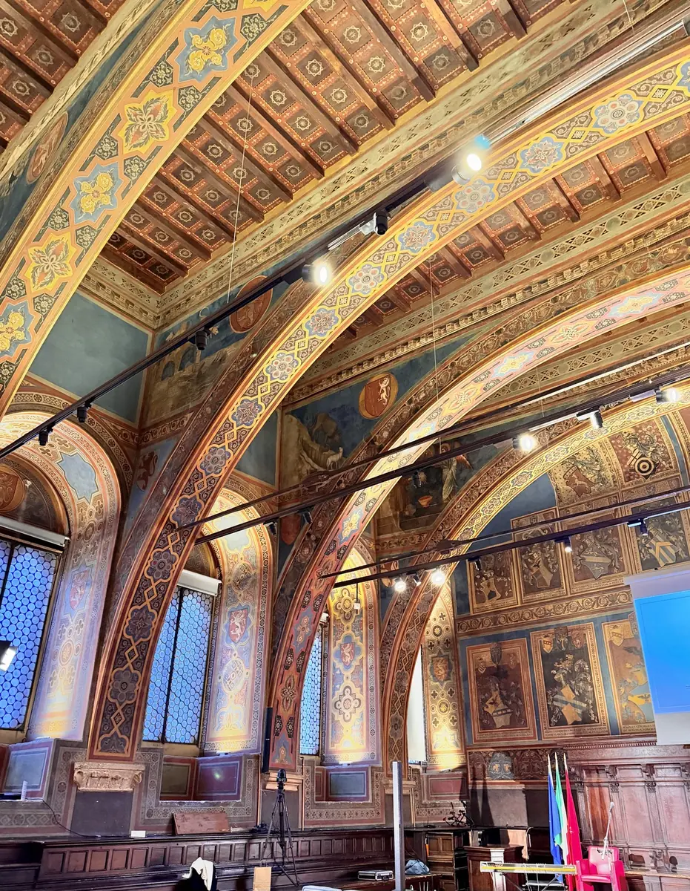
Accessibilità · La Sala dei Notari
Abbiamo raggiunto la sala al primo piano utilizzando l’ascensore del Palazzo dei Priori.
La Galleria Nazionale dell’Umbria
Sempre nel Palazzo dei Priori abbiamo visitato la Galleria Nazionale dell’Umbria.
Il museo custodisce una delle più importanti raccolte d’arte della regione: dipinti, sculture e oggetti preziosi raccontano circa otto secoli di storia, dal Medioevo all’età contemporanea. Il cuore del percorso è la pittura umbra del Rinascimento, con capolavori di Perugino e Pinturicchio, accanto a opere di maestri come Piero della Francesca e Beato Angelico. Le sale permettono così di scoprire il legame tra l’arte, Perugia e il suo territorio.
Ci siamo soffermati sul Polittico di Sant’Antonio di Piero della Francesca, composto da più tavole dipinte. Nella parte superiore spicca l’Annunciazione, con un lungo colonnato che crea un sorprendente effetto di profondità.
Abbiamo poi ammirato le opere del Perugino, riconoscibili per le figure dalle espressioni dolci, i paesaggi luminosi e l’armonia delle composizioni, e quelle del Pinturicchio, ricche di colori vivaci e dettagli decorativi. Due protagonisti del Rinascimento umbro, ciascuno con il proprio modo di raccontare le scene sacre.
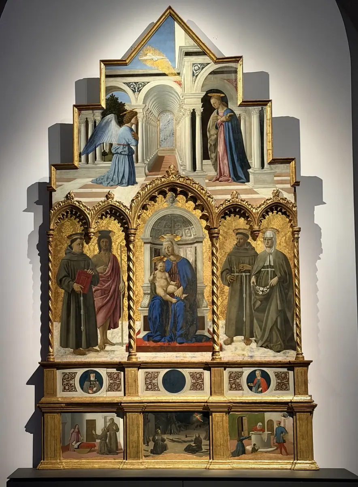
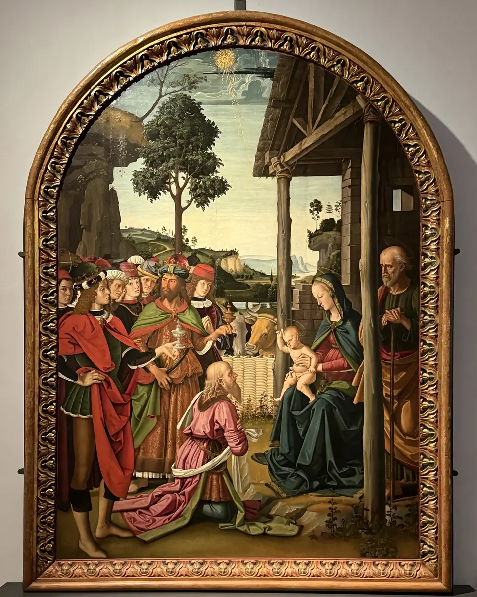
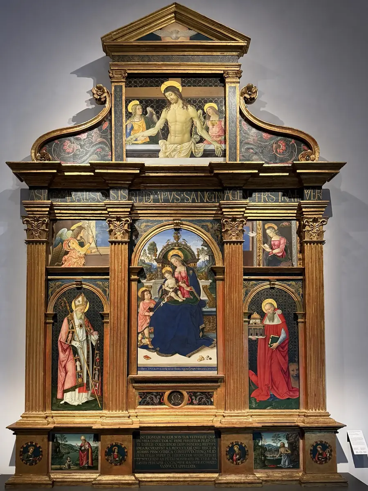
Il percorso ci ha portati anche nella Cappella dei Priori e nella Sala Farnesiana, un grande ambiente di rappresentanza con decorazioni che richiamano la famiglia Farnese e papa Paolo III.
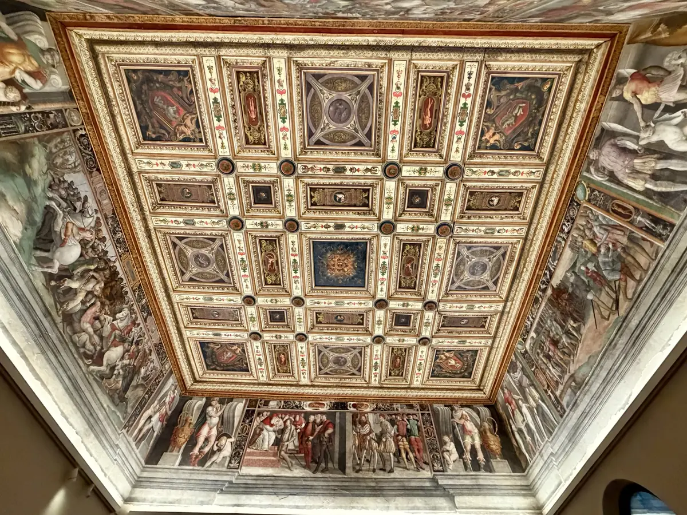
Tra dipinti e ambienti storici, il tempo è passato velocemente. Una visita che ci è piaciuta molto.
Accessibilità · La Galleria Nazionale dell’Umbria
Il percorso si sviluppa su due piani collegati da ascensori.
Da sapere prima di andare
Durante la nostra visita mi è stato richiesto di lasciare il Triride all’ingresso. Lo abbiamo sistemato nella sala della biglietteria e ho proseguito con la sola carrozzina.
Gli acquisti prima di ripartire
Prima di tornare al parcheggio ci siamo fermati ad acquistare salsa tartufata, strangozzi, salumi locali e altre specialità umbre.
Anche questa volta siamo riusciti a portare a casa qualche sapore della giornata.
Abbiamo raggiunto il parcheggio e siamo ripartiti, dopo una bella giornata fuori porta tra cioccolato, cucina umbra e visite nel centro storico.
Il mio «senza sorprese»
Le informazioni da ricordare, raccolte qui per ritrovarle facilmente.
| Voce | Voto | Da sapere prima |
|---|---|---|
| Accessibilità della Casa del Cioccolato Perugina | 4 su 5 | Percorso della fabbrica non completamente accessibile, ma dal ballatoio ho potuto osservare alcune fasi della lavorazione e sono rimasta soddisfatta della visita. |
| Parcheggio e collegamento al centro storico | 5 su 5 | Parcheggio SABA Mercato Coperto, a pagamento, con posti riservati e ascensori verso Piazza Matteotti. All’uscita abbiamo incontrato alcune pendenze e un piccolo dislivello. |
| Accessibilità della Trattoria Oberdan | 4 su 5 | Un gradino all’ingresso; abbiamo sganciato il Triride e sono entrata con l’aiuto del mio accompagnatore. |
| Bagno della Trattoria Oberdan | 4 su 5 | Bagno accessibile, utilizzato personalmente. |
| Accesso alla Cattedrale di San Lorenzo | 5 su 5 | Accesso dal chiostro, alla sinistra dell’ingresso principale, mantenendo il Triride montato. |
| Accesso alla Sala dei Notari | 5 su 5 | Raggiunta con l’ascensore del Palazzo dei Priori. |
| Accessibilità della Galleria Nazionale dell’Umbria | 5 su 5 | Due piani collegati da ascensori. Durante la nostra visita è stato richiesto di lasciare il Triride nella sala della biglietteria e proseguire con la sola carrozzina. |
| Specialità umbre c/o Trattoria Oberdan | 5 su 5 | Strangozzi alla Norcina originaria con tartufo e trippa alla Perugina, accompagnata dalla tradizionale torta al testo. |
Le informazioni da ricordare
- Casa del Cioccolato Perugina: in Viale San Sisto 207/C; posti riservati alle persone con disabilità vicinissimi all’ingresso.
- Visita alla fabbrica: in carrozzina si raggiunge il ballatoio affacciato su una parte delle linee produttive, dal quale ho potuto vedere alcune fasi della lavorazione e sono rimasta soddisfatta. Il percorso sopraelevato sulle linee non è accessibile alle persone con difficoltà motorie o che utilizzano ausili, come carrozzine o stampelle.
- Prenotazione alla Perugina: segnalare la presenza di persone che utilizzano ausili, per consentire un’assistenza adeguata durante la visita.
- Parcheggio SABA Mercato Coperto: in Via Angusta, a pagamento, con posti riservati e ascensori verso Piazza Matteotti. All’uscita abbiamo incontrato alcune pendenze e un piccolo dislivello.
- Bagni del parcheggio: segnalati con il simbolo dell’accessibilità, ma non utilizzati né verificati personalmente.
- Trattoria Oberdan: un gradino all’ingresso; abbiamo sganciato il Triride e sono entrata con l’aiuto del mio accompagnatore.
- Cattedrale di San Lorenzo: abbiamo utilizzato l’accesso dal chiostro, alla sinistra dell’ingresso principale, mantenendo il Triride montato.
- Sala dei Notari: raggiunta con l’ascensore del Palazzo dei Priori.
- Galleria Nazionale dell’Umbria: due piani collegati da ascensori. Durante la nostra visita è stato richiesto di lasciare il Triride nella sala della biglietteria e proseguire con la sola carrozzina.
- Bagni accessibili utilizzati personalmente: Casa del Cioccolato Perugina e Trattoria Oberdan.
I bagni incontrati
- Casa del Cioccolato Perugina Bagno accessibile, utilizzato personalmente.
- Trattoria Oberdan Bagno accessibile, utilizzato personalmente.
- Parcheggio SABA Mercato Coperto Bagni segnalati con il simbolo dell’accessibilità, ma non utilizzati né verificati personalmente.
Esperienza complessiva
5 cuori su 5Questo racconto descrive la nostra esperienza con carrozzina e Triride e le verifiche personali riportate. Servizi, accessi e condizioni di sosta possono cambiare: per organizzare la visita controlla le informazioni aggiornate dei luoghi interessati.